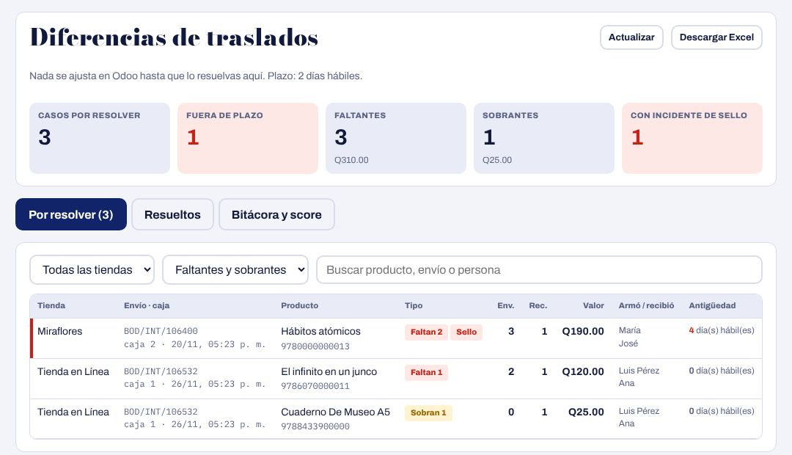
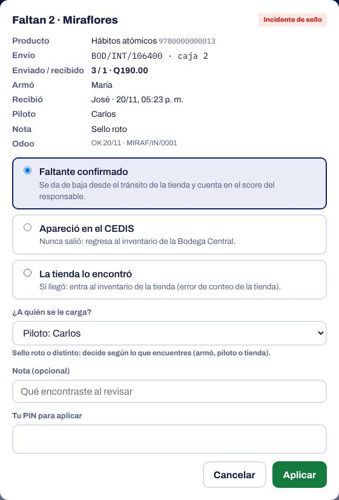
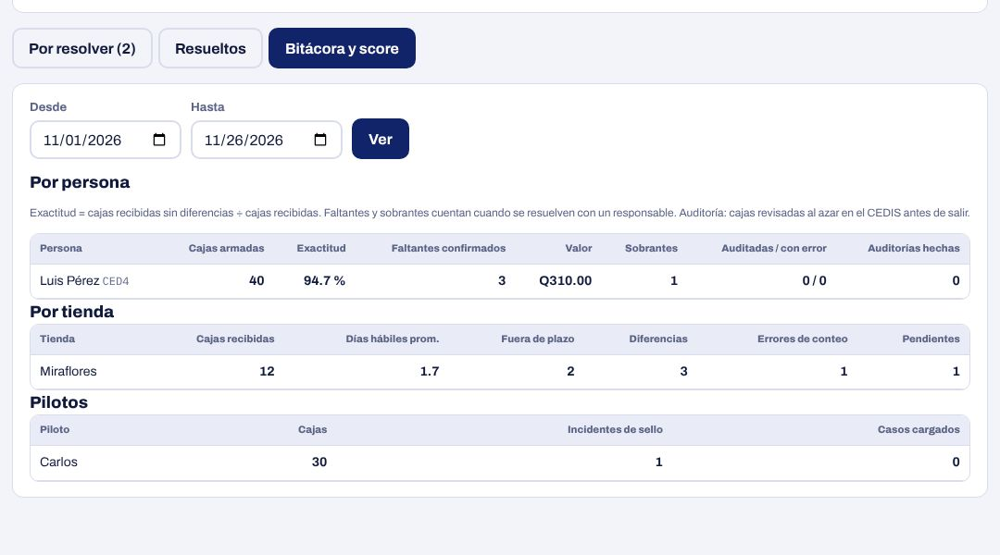

Nada se ajusta sin tu visto bueno
Cada faltante y sobrante espera en tu bandeja hasta que decides qué pasó.

Tu día en tres pasos
Diez minutos cada mañana.
- 1
Lee el resumen de las 7
Llega a auditoria@demuseo.com de lunes a viernes con todo lo pendiente.
- 2
Resuelve lo rojo primero
La barra roja marca los casos con más de 2 días hábiles.
- 3
Persigue lo atrasado
Llama a las tiendas con cajas sin revisar y al CEDIS si no terminó un envío.
Cómo leer la bandeja
- 1
Los totales: casos, fuera de plazo y valor.
- 2
La barra roja: ya pasó el plazo.
- 3
Las etiquetas. Faltan 2 Sobran 1 Sello dicen qué pasó.
- 4
Toca una fila para abrir el caso.

Resolver un caso
Elige lo que pasó y pon tu PIN. Odoo se ajusta en ese momento.
| Si encontraste que… | Elige | Qué hace en Odoo |
|---|---|---|
| Faltó de verdad | Faltante confirmado | Baja; cuenta en el score. |
| Se quedó en el CEDIS | Apareció en el CEDIS | Regresa a BOD. |
| La tienda contó mal | La tienda lo encontró | Entra a la tienda. |
| Llegó algo de más | Se queda en la tienda | Sale de BOD, entra a la tienda. |
| El código no existe | No existe en el sistema | Nada; darlo de alta. |
| No era sobrante | No era sobrante | Nada. |
¿A quién se le carga?
Solo al confirmar un faltante.
A quien armó la caja.
Revisa la foto y decide: armador, piloto o tienda.
“No se pudo determinar”: no baja el score de nadie.
Si algo falla
- Primero debe registrarse la llegada
- Que el CEDIS pulse Terminar traslado y un supervisor, Reintentar.
- Solo hay N de M unidades
- Otra caja del envío lo compensó. Revísalo a mano en Odoo.
- La escritura en el sistema está apagada
- Seguimos en prueba: pide agregar el traslado a SOLO_TRASLADOS.
- PIN incorrecto
- A los 5 intentos se bloquea 15 minutos.

Cada mes
El día 1 llega el reporte a auditoría, Ingrid y Claribel: exactitud, faltantes y auditorías por persona.
Antes, en la pestaña Bitácora y score.